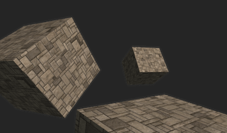
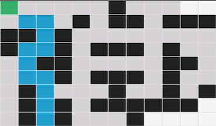
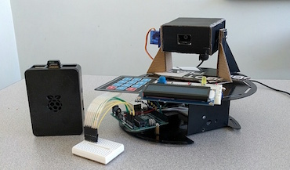
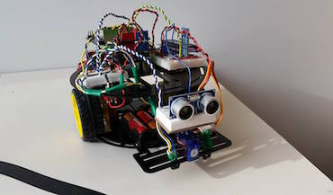
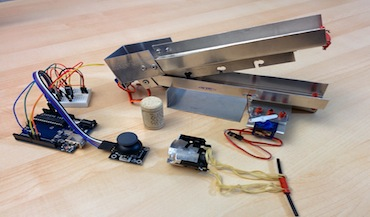

My name is Simon Jinaphant
I am a Computer Engineering student at the University of British Columbia;
I am fascinated by both hardware and software systems, along with their capabilities to deliver solutions for today’s challenges.During my free time I enjoy learning more about my personal interests and demonstrating my understanding of it through projects.
Teamwork is an important aspect I recognize, especially when working on large-scale projects;
I collaborate with other dedicated students to build autonomous vehicles
which will compete against other teams from around the world every year!
I also have prior experience developing software for mobile and desktop
as demonstrated by some of my personal projects; these projects include an Android application that solves complex mazes, along with a 3D graphics simulator that uses WebGL -a subset of OpenGL- for hardware acceleration.
I love to contribute in teams
Member since September 2014
I am a proud member of UBC Snowbots, a student team dedicated to the research and development of autonomous ground vehicles.
I was one of eight members selected to attend competition, where we placed 4th in design and 5th in the IOP networking challenges,
against over 40 registered teams from around the world.
I am currently leading the software design for the pathfinding system;
this system allows the vehicle to compute the shortest route in order to autonomously navigate obstacle courses as large as 200 ft by 100 ft.
My past accomplishments also includes optimizing the camera capturing software to increase performance by 4x in best case scenarios,
along with resolving memory leaks and serial connection issues to increase productivity time by 20%.
- C++
- Python
- ROS
- OpenCV
- Linux
Projects I have worked on

3D Model Simulator
Personal project
A web-based 3D graphics simulator currently capable of rendering 20,000 polygons every frame per second,
by using WebGL to deliver high performance via hardware acceleration.

Android Pathfinder
Personal project
A visually interactive application where users can create complex mazes and watch a path be
computed within milliseconds; this path is also guaranteed to be the shortest one.

SentrINO Security
Academic Group Project
A security system which utilizes computer vision to autonomously tracks intruders
while transmitting a video record to a cloud server.
- C
- Python
- Arduino
- Raspberry Pi

Arduino WALL-E
Academic Group Project
A robot which can autonomously roam while avoiding obstacles, accurately follow shaded lines,
or be controlled via bluetooth.

Projectile Launcher
Academic Group Project
I collaborated in the design of a projectile launcher
which ranked amongst the top in performance during competition day.
My work experience
ICT Tutor and Social Media Intern
Vancouver Community Network | Jul 2015 - Sep 2015
A summer internship provided by Vancouver Community Network for me to work at Mount Pleasant Neighbourhood House;
I provided computer lessons for people facing learning difficulties due to language and financial barriers.
-
Provided over 60 computer lessons where participants utilized online services for jobs search
and learn to type up to 3x their original speed.
-
Researched and implemented search optimization techniques to increase search ranking to the
top 5 results for the programs offered.
-
Designed responsive HTML email templates for Mailchimp in order to deliver visual newsletter
across multiple device platforms.
Computer Science Department Assistant (Volunteering)
Eric Hamber Secondary | Sep 2013 - Jun 2014
During my final year of high school, I helped enrich the computer science program for over 120 students,
in addition to any future students who will be enrolled after I have graduated.
-
Produced multiple online resources for junior students, allowing them to have convenient access anywhere;
this also lead to a significant 20% increase in the year’s average test results.
-
Developed a program to interact with virtual robots students created by recording the simulated battle between them,
resulting in a new annual competition for students to participate in.
-
Created a visually appealing webpage
which highlights student's accomplishments and interest for computer science,
further promoting the program to parents and prospective students.